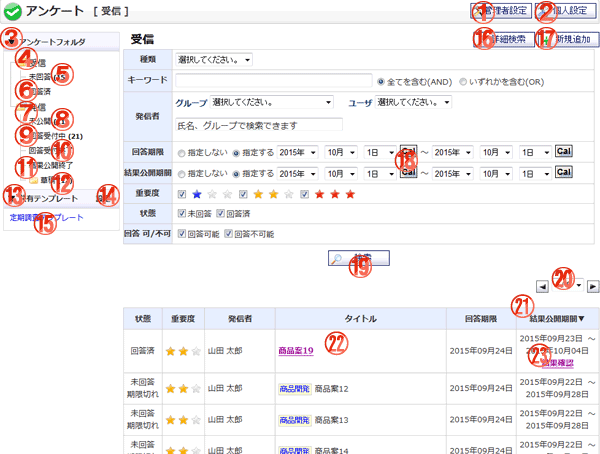

アンケート[受信](詳細検索)画面です。

機能説明
管理者設定管理者設定画面へ遷移します。管理者のみ利用可能です。 |
個人設定個人設定画面へ遷移します。 |
|---|---|
アンケートフォルダ詳細切り替えクリックすると、アンケートフォルダの詳細が開閉します。 |
受信フォルダ受信したアンケートの一覧を表示します。 |
受信フォルダ 未回答受信したアンケートの中で、未回答アンケートの一覧を表示します。括弧内の数字は、未回答のアンケート数です。ただし回答期限が過ぎたアンケートは含まれていません。 |
受信フォルダ 回答済受信したアンケートの中で、回答済アンケートの一覧を表示します。 |
発信フォルダ発信したアンケートの一覧を表示します。 |
発信フォルダ 未公開発信したアンケートの中で、未公開アンケートの一覧を表示します。括弧内の数字は、未公開アンケート数です。 |
発信フォルダ 公開発信したアンケートの中で、公開中のアンケート一覧を表示します。括弧内の数字は、現在公開中のアンケート数です。 |
発信フォルダ 回答完了発信したアンケートの中で、回答期限が過ぎて、かつ公開期間内のアンケート一覧を表示します。 |
発信フォルダ 公開完了発信したアンケートの中で、公開期間が過ぎたアンケートの一覧を表示します。 |
草稿フォルダ草稿に保存しているアンケートの一覧を表示します。括弧内の数字は、現在草稿保存しているアンケート数です。 |
共有テンプレート詳細切り替えクリックすると、共有テンプレートの一覧が開閉します。管理者またはアンケート発信対象者のみ利用可能です。 |
共有テンプレート 設定ボタン共有テンプレートの一覧画面へ遷移します。管理者またはアンケート発信対象者のみ利用可能です。 |
共有テンプレート 一覧共有テンプレートの一覧を表示します。タイトルが長い場合は省略して表示します。マウスカーソルをタイトルに合わせると、該当テンプレートの種類名とタイトルの全文が表示されます。管理者またはアンケート発信対象者のみ利用可能です。 |
詳細検索ボタンクリックすると、詳細検索入力欄を表示します。もう一度クリックすると、入力欄を閉じます。 |
新規追加ボタンアンケートを新規で発信します。アンケート作成画面へ遷移します。 |
カレンダーボタンポップアップでカレンダー画面が開きます。カレンダー画面で日付をクリックすると、クリックした日付がセットされます。 |
検索ボタン入力された検索条件をを元に、アンケートの詳細検索を行います。 |
ページコンボ・前頁・次頁ページコンボで任意のページへ、前頁アイコンクリックで前のページへ、次頁アイコンクリックで次のページへそれぞれ遷移します。 |
ヘッダータイトルクリックによって一覧のソート条件の切り替えを行います。現在ソート条件になっている項目をもう1度クリックすると「昇順」「降順」が切り替わります。 |
受信アンケート内容受信アンケートの状態、重要度、発信者、種類名、タイトル、回答期限、結果公開期限を表示します。 |
結果確認アンケートの結果を確認します。結果確認画面へ遷移します。 |
表示・入力項目説明
キーワード
検索するキーワードを入力します。
種類
検索する種類名を選択します。
キーワード(詳細検索)
検索するタイトル名を入力します。
検索対象
キーワード検索の範囲を選択します。
グループ
検索するグループを選択します。
ユーザ
検索するユーザーを選択します。選択したグループに所属するユーザーが表示されます。
発信者
検索するグループ・ユーザー名を入力します。
公開期間 指定フラグ
公開期間検索の指定フラグを選択します。指定するを選択すると、公開期間の年月日選択欄が表示されます。
公開期間
検索する公開期間の年月日を選択します。
回答期限 指定フラグ
回答期限検索の指定フラグを選択します。指定するを選択すると、回答期限の年月日選択欄が表示されます。
回答期限
検索する回答期限の年月日を選択します。
重要度
検索する重要度を選択します。
状態
検索する状態を選択します。